Introducción
En esta sección de introducción, me complace compartir contigo mi Portafolio de Dibujo Lineal y Geometría Descriptiva. Aquí podrás explorar una recopilación de mis trabajos y proyectos relacionados con este fascinante campo de estudio. Antes de adentrarnos en los detalles de mis logros y proyectos, permíteme compartir mis expectativas iniciales cuando comencé este emocionante curso.
Al iniciar el curso de Dibujo Lineal y Geometría Descriptiva, tenía como expectativa aprender los fundamentos del dibujo técnico, dominar la perspectiva y proyección, aplicar el dibujo lineal en el campo de la ingeniería que es importante para mi carrera, desarrollar habilidades técnicas y creativas, enriquecer mi formación académica y profesional.
A medida que avanzamos a través de este portafolio, podrás observar cómo estas expectativas han sido abordadas y cómo he ido creciendo en mis habilidades y conocimientos en el área del dibujo lineal y la geometría descriptiva, también hay algunos temas que se me dificultan pero es una buena manera de desarrollarme creativa y profesionalmente al momento de salir de mi zona de habilidades.
Módulo 1
- Foro 1 (colocar captura de participación) 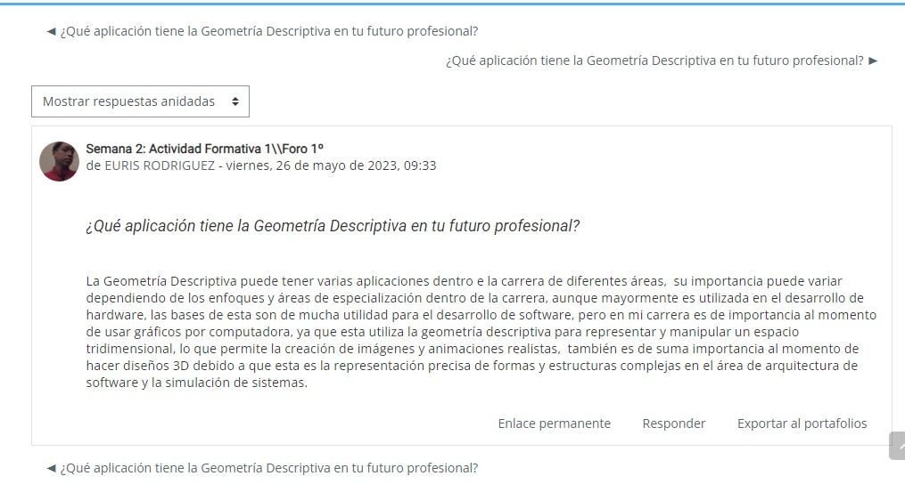
- Crucigrama 1 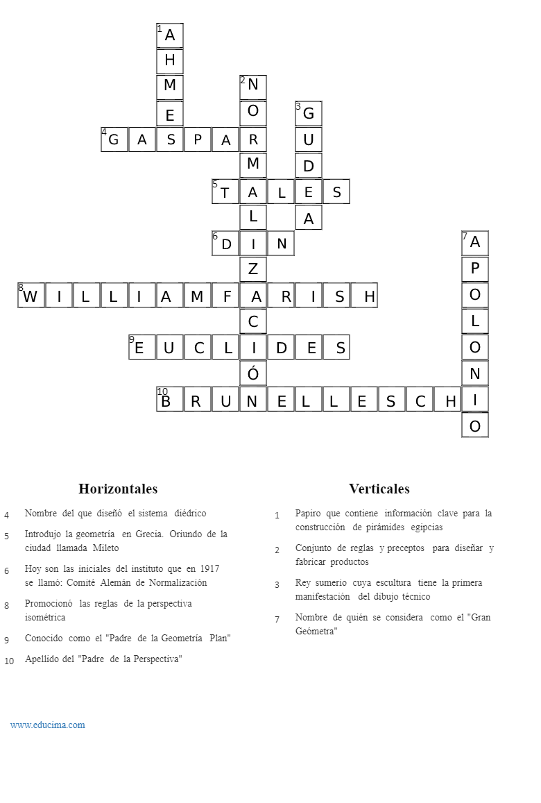
- Taller 1
- Investigación 1


Módulo 2
- Identifica tipos de líneas 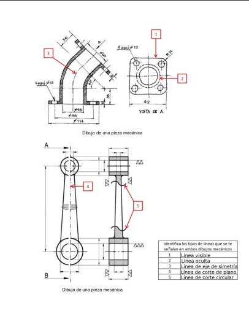
- Taller 2 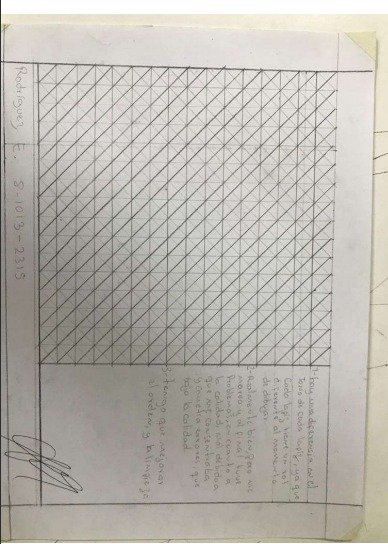
- Sopa de letras 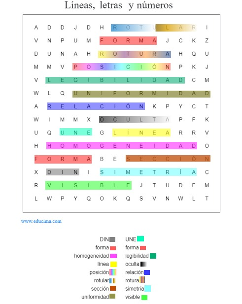
- Taller 3 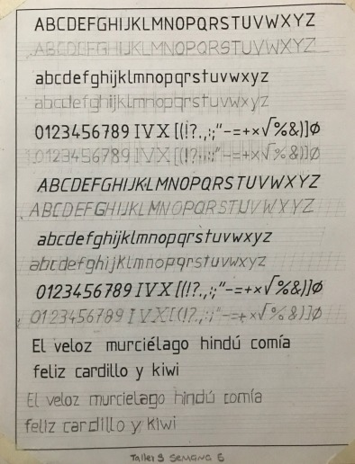
Módulo 3
- formativa 9
- taller 4 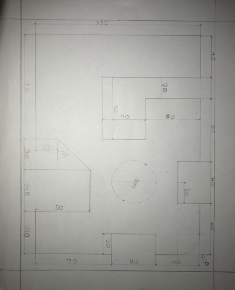
- taller 5 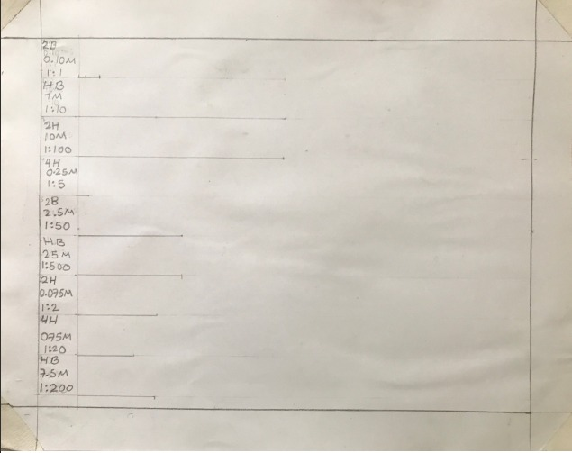
- taller6 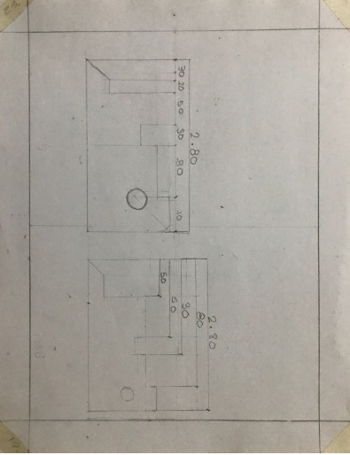

Módulo 4
- taller 7 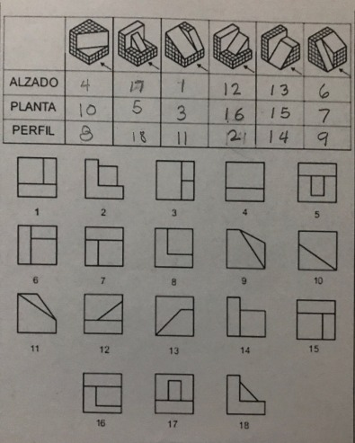
- taller 8 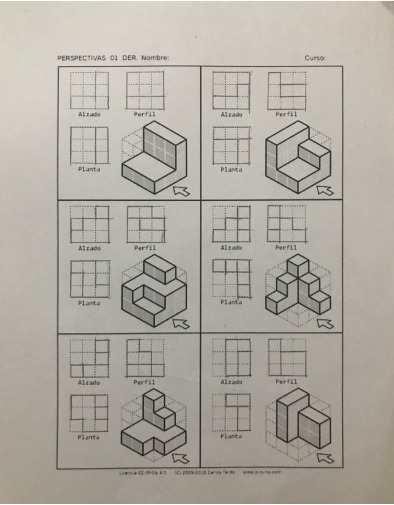
- taller 9
- taller 10


Módulo 5
- taller 11 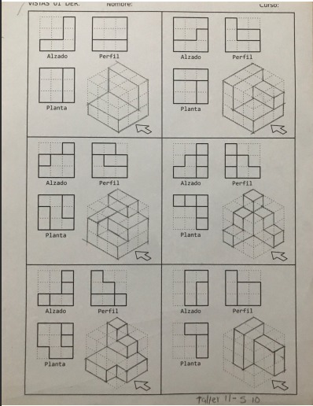
- taller12 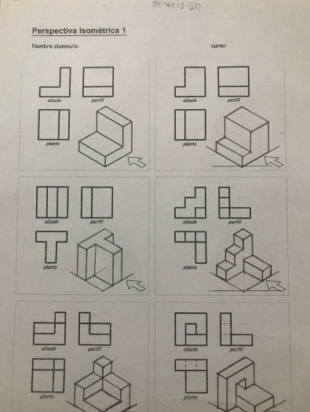
- taller 13
- taller 14


Conclusión
Gracias por visitar mi Portafolio Digital.
Espero que hayas disfrutado explorando mis trabajos y proyectos.
Al llegar al final de este portafolio de geometría descriptiva y dibujo lineal, me complace compartir mis pensamientos finales sobre esta gratificante experiencia de aprendizaje. Durante el curso, tuve la oportunidad de sumergirme en el fascinante mundo del dibujo técnico y la representación gráfica, y cada módulo fue una ventana para profundizar mis conocimientos y habilidades en esta área. .
En primer lugar, puedo decir con entusiasmo que las expectativas que establecí al comienzo de este curso se han cumplido en gran medida e incluso superado. El programa me dio una base sólida en los conceptos básicos de geometría descriptiva, permitiéndome representar con precisión y eficiencia objetos y espacios tridimensionales en un plano bidimensional. Además, enfocarme en el arte del dibujo lineal me ha brindado las herramientas para expresar mi creatividad y visión artística, combinando la ciencia con el arte. Las asignaciones prácticas y los proyectos que realicé fueron una oportunidad invaluable para aplicar los conocimientos teóricos adquiridos en clase. Cada misión representa un nuevo desafío y una oportunidad para perfeccionar mis habilidades técnicas y visuales. Con cada paso del proceso de aprendizaje, adquirí más confianza en mis habilidades y profundicé mi apreciación por la precisión y el detalle que requieren los dibujos de ingeniería.
En cuanto a mis recomendaciones, creo que el curso podría enriquecerse asumiendo proyectos más complejos relacionados con el diseño arquitectónico o de ingeniería. Estos retos adicionales permitirán a los alumnos profundizar en la aplicación práctica de la geometría descriptiva y el dibujo lineal, preparándonos para afrontar situaciones más reales en el ámbito profesional.